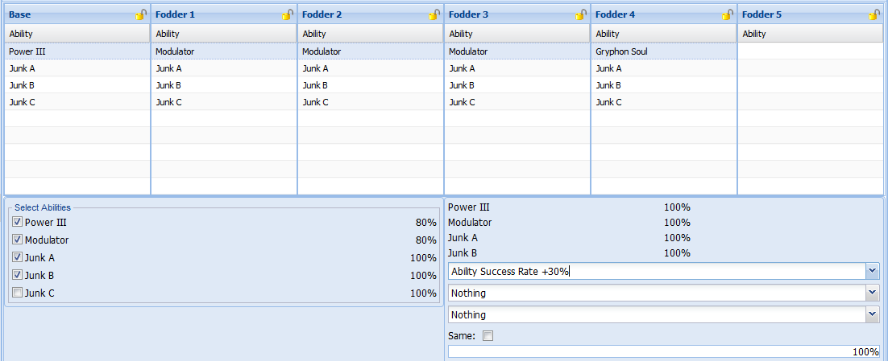

Affix Recipes are simulations made with a third party program that allows you to place and arrange affixes that one needs to have on their base equipment and fodders without needing to waste resources in-game.
It's recommended to make a recipe for affixing to act as a guide for fodder preparation and to prevent wasteful buying due to misplaced affixes and forgotten rates.
Affixes take up slots in an equipment which can range from 1 to 8 slots. Knowing this, Direct Slot means having the same number of slots that you started with, Upslot means adding an additional slot for the final result, and Downslot is where the number of slots is reduced due to a failed affix.
When working with an Upslot, penalties are applied to the base rates of the affixes present.
| Slots | 2 Materials | 3 Materials |
|---|---|---|
| 0 → 1 | 100% | 100% |
| 1 → 2 | 80% | 90% |
| 2 → 3 | 75% | 85% |
| 3 → 4 | 60% | 70% |
| 4 → 5 | 50% | 60% |
| 5 → 6 | 45% | 55% |
| 6 → 7 | 35% | 40% |
| 7 → 8 | 30% | 30% |
There are cases when a player purposely takes a downslot to reduce the number of slots on the equipment due to the cost of fodders at higher slots.
Boosting works by using affixes that can improve the rates of other affixes in the recipe. This is commonly seen in Soul affixes and Stat affixes with the Souls boosting certain Stats. There are a wide array of affixes that interact with each other. For a more complete list, please refer to the Appendix.
Boosting is not only limited to affix interactions. An affix can be boosted through other different ways:
The boost is dependent on the base rate of an affix; using two same name fodders increases the base affix by 10% while using three or more same name fodders increases the base affix by 15%.
Using two same fodders increased the transfer of Shoot II by 6%.
Using three same fodders increased the transfer of Shoot II by 9%.
Dudu Boost Day is a special day that occurs every Tuesday and the first day of every month. Certain Special Abilities on this day will receive a 5% affixing boost and the Abilities that qualify for this boost rotate each Tuesday. (For the list of Abilities that qualify for the different Dudu Boost Days, visit http://www.bumped.org/psublog/dudu-boost-day.)
Affix Week is a special week long event that is given to players from completing campaigns that gives an additional 5% or 10% affixing boost to all affixes. Affix Week happens thrice a year: one 5% and two 10%.
Sadly Dudu Boost Day and Affix Week do not stack.
Affix Isolation is done to use the least amount of affix copies in the entire affixing recipe; the more complex a fodder is, the more steps and resources it takes to produce. This is usually done to the more expensive affixes to minimize the costs.
Let’s take a simple direct slot affixing recipe for S-ATK with Act the Soul, Power III, Modulator, and Deus Factor.
The recipe looks fine since nothing will fail as everything is at 100% success rate right? The issue with the recipe is that fodder 4 and 5 should be made from scratch or bought from the market.
That is about 6 copies of 4s Modulator, if we are to make them from direct slot, which can cost a lot of money. So by moving the affixes around, you can isolate the more expensive Modulator which cuts the needed copies to 3 per unit.
Of course isolation of affixes doesn’t work for all affix recipes since eventually you’ll need to have all fodders prepared.